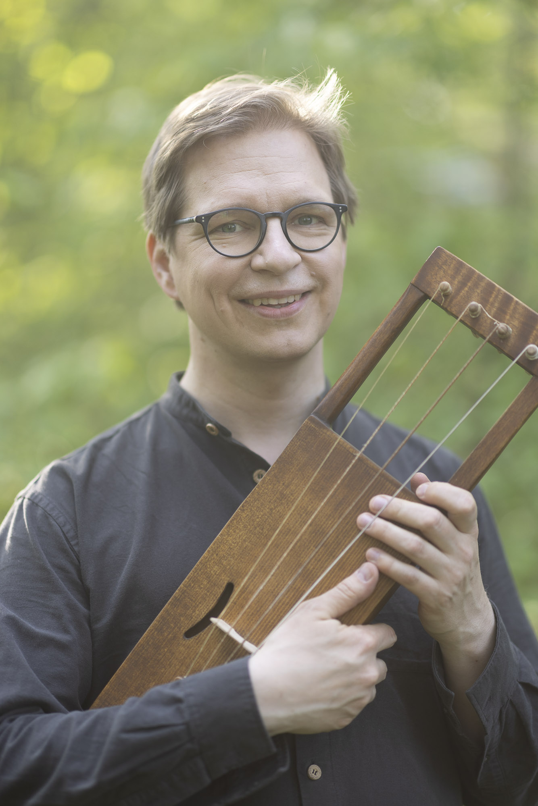

Ilkka Heinonen is a Helsinki-based musician and composer specialising in folk and world music, playing the jouhikko, double bass, violone and viola da gamba - with a passion for early music. As one of the pioneers of jouhikko playing, Heinonen has sought to expand the possibilities of the instrument. In his solo programmes, Heinonen explores the boundaries between the sacred and the secular through the performance practices of Karelian jouhikko music and early music, as on his solo instrumental album Käki (2023), which explores the sound of the instrument in depth. The Ilkka Heinonen Trio, which has released two critically acclaimed albums (Savu 2015 and Lohtu 2021), draws its experimental sound from European jazz and Renaissance music alike. Heinonen has also premiered all the concertos composed for the jouhikko so far (comp. Timothy Page 2013, Krishna Nagaraja 2017). Heinonen plays the jouhikko in Ensemble Gamut!, which combines elements of medieval music, Finnish folk songs, improvisation and electronic soundscapes. The ensemble's unique sound can be heard in concerts and on the albums UT(2020) and RE (2022). Sámi singer Ánnámáret's band has taken Heinonen deep into the world of ancient luohtis, contemporary music and electronically manipulated jouhikko sounds, as in the albums Nieguid Duovdagat (2021) and Bálvvosbáiki (2024). Heinonen has also performed with jouhikko quartet Jouhiorkesteri in numerous countries from Europe to Asia. Ilkka Heinonen is active as a double bassist and G-violone player in baroque ensembles and performs especially in Nordic and Eastern European folk music ensembles. Heinonen also works regularly with contemporary dance and music theatre. Heinonen is currently completing his artistic doctorate on the expressive possibilities of the jouhikko at the Sibelius Academy's MuTri doctoral programme.